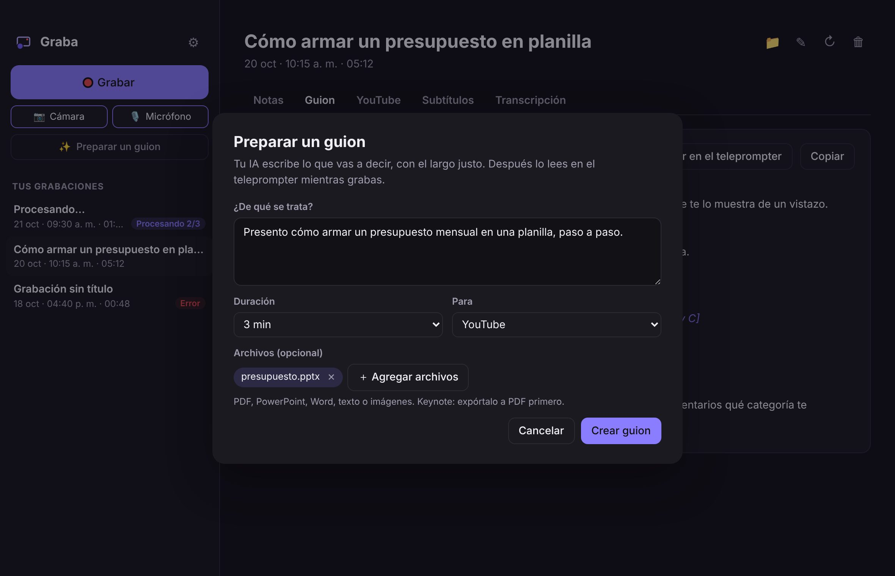
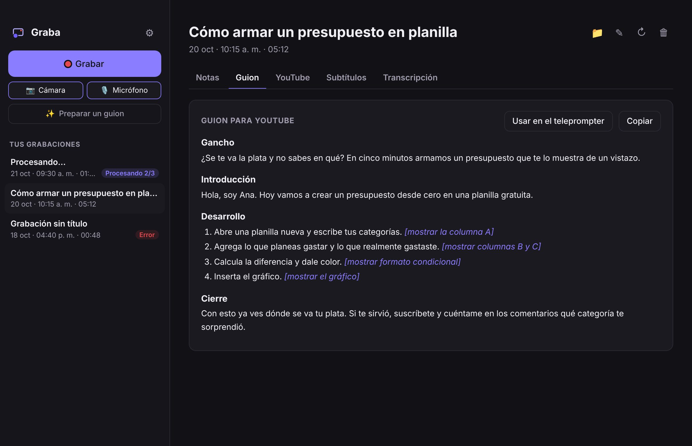

Graba tu pantalla. Tu IA te deja el guion.Record your screen. Your AI writes the script.
Pantalla, cámara y voz, como Loom. Tu IA prepara el guion y lo lees en un teleprompter que no sale en el video. Al terminar, Graba transcribe en tu computador y te deja notas, títulos, descripción con capítulos y subtítulos.Screen, camera and voice, like Loom. Your AI prepares the script and you read it on a teleprompter that doesn't show in the video. When you finish, Graba transcribes on your computer and gives you notes, titles, a description with chapters and subtitles.
Para Mac, Windows y Linux ·For Mac, Windows and Linux · otras formas de instalarother ways to install

Así de simpleThat simple
Tres pasos y nada que configurar cada vez.Three steps, nothing to set up each time.
1. Graba1. Record
Tu pantalla con tu cara en una burbuja y tu voz. La barrita para terminar no sale en el video.Your screen with your face in a bubble and your voice. The stop bar doesn't show up in the video.
2. Transcribe aquí2. Transcribes here
Tu voz se vuelve texto dentro de tu computador, con whisper. Sin subir el video.Your voice becomes text on your computer, with whisper. Without uploading the video.
3. Tu IA escribe3. Your AI writes
Claude, ChatGPT o Gemini, con tu cuenta, te deja todo listo para publicar.Claude, ChatGPT or Gemini, with your account, gets everything ready to publish.

Llega y grabaJust show up and record
Cuéntale a tu IA la idea, cuánto debe durar y súmale tu presentación. Te escribe lo que vas a decir, con el largo justo.Tell your AI the idea, how long it should be and add your slides. It writes what you'll say, at just the right length.
Lo que recibesWhat you get
De cada grabación, con un botón para copiar cada cosa.From every recording, with a copy button for each part.

Tus videos son tuyosYour videos are yours
Todo queda en una carpeta normal de tu computador. Sin cuentas, sin nube, sin límites de largo.Everything stays in a normal folder on your computer. No accounts, no cloud, no length limits.
- El video no sale de tu computador. A tu IA solo le llega el texto, con tu cuenta.The video never leaves your computer. Your AI only gets the text, with your account.
- Archivos abiertos: MP4, Markdown y SRT. Ábrelos con lo que quieras o arma tus propios scripts.Open files: MP4, Markdown and SRT. Open them with anything or build your own scripts.
- Código abierto (MIT): puedes ver exactamente qué hace.Open source (MIT): you can see exactly what it does.
~/Graba/
2026-10-20 1015 - Presupuesto en planilla/
video.mp4
grabacion.md # notas, guion, títulos…
subtitulos.srt
transcripcion.json
Open source y sin fines de lucroOpen source and non-profit
Graba no es una empresa. No hay versión de pago, ni anuncios, ni inversionistas, ni datos que vender. La hacemos entre todos y es de todos.Graba isn't a company. There's no paid version, no ads, no investors, no data to sell. We build it together and it belongs to everyone.
InstalarInstall
La primera vez, Graba te ayuda a elegir tu IA y descarga el transcriptor (una sola vez). Después se actualiza sola: te avisa dentro de la app.The first time, Graba helps you pick your AI and downloads the transcriber (once). After that it updates itself: it lets you know inside the app.
🍎 Mac
Chip Apple y macOS 15 o posterior. En la Terminal:Apple chip and macOS 15 or later. In Terminal:
curl -fsSL https://raw.githubusercontent.com/graba-app/graba/main/instalar.sh | bashO descarga la app, arrástrala a Aplicaciones y la primera vez ve a Ajustes del Sistema → Privacidad y seguridad → «Abrir igualmente».Or download the app, drag it to Applications and the first time go to System Settings → Privacy & Security → “Open Anyway”.
Descargar para MacDownload for Mac🪟 Windows
Windows 10 u 11. En PowerShell:Windows 10 or 11. In PowerShell:
irm https://raw.githubusercontent.com/graba-app/graba/main/instalar.ps1 | iexO con el instalador. Si aparece «Windows protegió tu PC»: «Más información» → «Ejecutar de todas formas».Or with the installer. If “Windows protected your PC” shows up: “More info” → “Run anyway”.
Descargar para WindowsDownload for Windows🐧 Linux
x86_64 con PulseAudio o PipeWire. En una terminal:x86_64 with PulseAudio or PipeWire. In a terminal:
curl -fsSL https://raw.githubusercontent.com/graba-app/graba/main/instalar.sh | bashO el AppImage: dale permiso de ejecución y ábrelo (necesita FUSE).Or the AppImage: make it executable and open it (needs FUSE).
Descargar AppImageDownload AppImage¿No tienes una IA instalada? Guía sin tecnicismos para Claude, ChatGPT o Gemini.No AI installed yet? Plain-language guide for Claude, ChatGPT or Gemini.
PreguntasQuestions
¿Es una alternativa gratis a Loom?Is it a free alternative to Loom?
Para grabar tu pantalla con tu cámara y tener el texto listo, sí. Si necesitas compartir un link al instante para que otros vean y comenten, Loom sigue siendo mejor para eso: Graba deja el video en tu computador y tú decides dónde publicarlo.For recording your screen with your camera and getting the text ready, yes. If you need to share a link instantly for others to watch and comment, Loom is still better at that: Graba keeps the video on your computer and you decide where to publish it.
¿Sube mi video a algún lado?Does it upload my video anywhere?
No. El video y la transcripción quedan en tu computador. A tu IA solo le llega el texto de la transcripción, con tu cuenta, igual que si lo pegaras en su chat.No. The video and transcript stay on your computer. Your AI only gets the transcript text, with your account, just as if you pasted it into its chat.
¿Qué IA necesito?Which AI do I need?
La que ya tengas: Claude Code (Claude Pro o Max), Codex (cualquier plan de ChatGPT, incluso el gratis con límites) o Antigravity CLI (Gemini). Se instala una vez; aquí está la guía.The one you already have: Claude Code (Claude Pro or Max), Codex (any ChatGPT plan, even free with limits) or Antigravity CLI (Gemini). You install it once; here's the guide.
¿Por qué mi Mac dice que no puede verificar la app?Why does my Mac say it can't verify the app?
Porque Graba todavía no paga el certificado de Apple que quita ese aviso: es un proyecto gratis. El código es abierto, cada versión se compila en GitHub a la vista de todos y el instalador de un comando revisa la huella (SHA-256). Para abrirla: Ajustes del Sistema → Privacidad y seguridad → «Abrir igualmente». Con el comando de la Terminal no aparece.Because Graba doesn't pay yet for the Apple certificate that removes that warning: it's a free project. The code is open, every version is built on GitHub in public and the one-command installer checks the fingerprint (SHA-256). To open it: System Settings → Privacy & Security → “Open Anyway”. The Terminal command skips it.
¿Funciona en Windows y Linux?Does it work on Windows and Linux?
Sí: es la misma app con la misma interfaz. En Windows y Linux la transcripción usa el procesador (en Mac, el chip gráfico), así que puede ser algo más lenta; el modelo «Liviano» va bien en casi cualquier computador.Yes: same app, same interface. On Windows and Linux transcription runs on the CPU (on Mac, the GPU), so it can be a bit slower; the “Light” model runs well on almost any computer.
¿Por qué es gratis? ¿Quién la mantiene?Why is it free? Who maintains it?
Porque Graba es un proyecto open source sin fines de lucro: no vende nada ni a nadie. La mantiene una comunidad de personas que la usan; cualquiera puede sumar ideas, pruebas, traducciones o código. La licencia es MIT.Because Graba is a non-profit open-source project: it doesn't sell anything to anyone. It's maintained by a community of people who use it; anyone can add ideas, testing, translations or code. The license is MIT.
¿Cómo se actualiza?How does it update?
Sola: Graba revisa si hay una versión nueva al abrirse y cada 6 horas, y te avisa dentro de la app. Tocas Actualizar y listo; tus grabaciones no se tocan.By itself: Graba checks for a new version when it opens and every 6 hours, and lets you know inside the app. Click Update and you're done; your recordings aren't touched.
¿En qué idiomas funciona?Which languages does it support?
La app está en español e inglés. La transcripción reconoce muchos idiomas y la IA escribe en el mismo idioma en que hablas.The app is in Spanish and English. Transcription recognizes many languages and the AI writes in the same language you speak.
Hagámosla entre todosLet's build it together
Graba es gratis y abierta. Hay lugar para cualquiera, programes o no.Graba is free and open. There's room for everyone, coder or not.